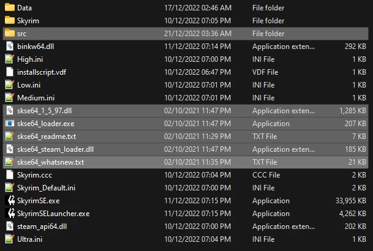

Utilities
Make sure the A Dragonborn's Fate profile is active before proceeding.
Creating a Separator in MO2
- Right-click the empty space in the left pane of MO2 and select Create Separator.
- Name the separator Utilities.
Installation instructions:
- Old Files - Skyrim Script Extender (SKSE64) 2.0.20 (Manual Download)
- From the downloaded archive, extract everything to the game's Root folder

Address Library
Installation instructions:
- Main File - All in one (Special Edition)
Resource required for other SKSE plugins.
After installing a mod, make sure you check the box next to it in the left pane of MO2 to enable it.
Crash Logger
Installation instructions:
Generates crash logs.